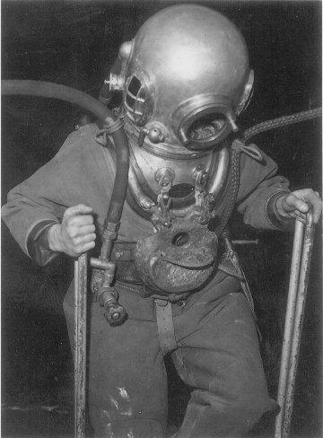
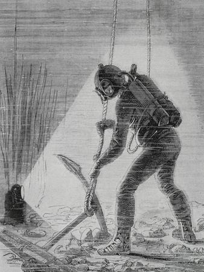
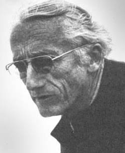

Het begin
Het precieze begin van het duiken is onbekend, maar er zijn Griekse en Egyptische verwijzingen naar het duiken.
De oudste afbeelding van een duiker is een Assyrische houtsnede van een duiker met een met lucht gevulde dierenhuid.
Verder vinden we in oude geschriften veel verwijzingen naar onderwateractiviteiten.
Zo zou Alexander de Grote tijdens zijn veroveringstochten in Klein-Azië al gebruik hebben gemaakt van een soort duikerklok.
Dit was een ton waarin een glazen raam was bevestigd.



Oude duikhelm
Een duikhelm werd vroeger gebruikt door duikers, die met een koperen duikhelm, twill duikpak, zware lompe loden schoenen, een dito borst/ruggewicht of een gordellood om, vanaf een schip afdaalden.
Hun helm was verbonden met een luchtslang, die om veiligheidsredenen werd vastgezet aan de helm.
De duiker had om dezelfde reden een touw om zijn middel.
Een duikhelm was van koper en had drie of soms vier glazen kijkvensters.
Het voorste venster kon geopend worden. Links, rechts en soms schuin bovenaan, was er ook een venster voor een groter perifeer zicht.
De duikhelm kon vanwege zijn gewicht niet door de duiker zelf op de halsschouderplaat geschroefd worden, dit gebeurde door helpers.
Tijdens het onder water gaan stroomden de helm en het duikpak vol lucht via de toevoer van de luchtpomp op het schip of aan de oever. Om onder water te kunnen gaan waren de loden gewichten noodzakelijk.
Jacques-Yves Cousteau
Jacques Cousteau (1910–1997) was een Franse marineofficier, ontdekkingsreiziger en pionier van de oceanografie. Hij is vooral bekend door zijn uitvinding van de Aqualung, waarmee mensen langdurig onder water konden ademen. Cousteau produceerde talloze documentaires en boeken over het leven onder water, waarmee hij wereldwijd het bewustzijn over oceaanbescherming vergrootte. Hij richtte 'het Cousteau Society' op om marien milieu en bedreigde diersoorten te beschermen. Cousteau combineerde wetenschap, avontuur en media om het publiek te inspireren, en zijn werk legde de basis voor moderne duiktechnieken en milieubehoud. Hij blijft een symbool van ontdekkingsdrang en natuurbescherming.
